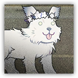
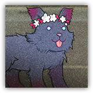

安眠伴随兽 Sleep-accompanying Beast
近战 物理；精英 野兽

|
 |
不醒童话之中的大型陪伴兽。很有力气。负责把睡着的人们送到可供其安眠的地方。不过，它似乎不太会认路。 |
安眠伴随兽丨Sleep-accompanying Beast
大型野兽（梦境造物），中立
| AC 17 | 先攻 +2（12） |
| HP 123（13d10+52） | |
| 速度 50 尺 | |
| 调整 | 豁免 | 调整 | 豁免 | 调整 | 豁免 | |||||||||
|---|---|---|---|---|---|---|---|---|---|---|---|---|---|---|
| 力量 | 22 | +6 | +6 | 敏捷 | 14 | +2 | +2 | 体质 | 18 | +4 | +4 | |||
| 智力 | 5 | -3 | +0 | 感知 | 12 | +1 | +4 | 魅力 | 17 | +3 | +3 |
| 技能 运动+9，察觉+4 |
| 感官 黑暗视觉120尺；被动察觉14 |
| 语言 懂通用语但不能说 |
| CR 7（XP2,900；PB+3） |
特质 Traits
劫持 Abduct。伴随兽移动一名正被其擒抱的生物时无需额外消耗移动力。
动作 Actions
多重攻击 Multiattack。伴随兽发动两次撕裂攻击，然后使用昏昏欲睡。
撕裂 Rend。近战攻击检定：+9，触及5尺。命中：22（3d10+6）挥砍伤害。若目标生命值被此伤害降至0，其伤势稳定。
昏昏欲睡 Sleepy。感知豁免检定：DC14，单个伴随兽5尺内的生物。失败：目标陷入失能直到伴随兽下回合开始。
附赠动作 Bonus Actions
快速搬运 Quick Carry。敏捷豁免检定：DC17，伴随兽选择5尺内一个陷入失能的生物。失败：目标陷入受擒状态（逃脱DC17）。
沉眠伴随兽 Slumber-accompanying Beast
近战 物理；精英 野兽
|
 |
不醒童话之中的超大陪伴兽。很有力气，还能漂浮起来。睡在它蓬松干爽的背上是梦城堡公认的一大幸事。不过，它无法识别终点的问题还是没有解决。 |
沉眠伴随兽丨Slumber-accompanying Beast
巨型野兽（梦境造物），中立
| AC 17 | 先攻 +6（16） |
| HP 157（15d12+60） | |
| 速度 50 尺 | |
| 调整 | 豁免 | 调整 | 豁免 | 调整 | 豁免 | |||||||||
|---|---|---|---|---|---|---|---|---|---|---|---|---|---|---|
| 力量 | 22 | +6 | +6 | 敏捷 | 14 | +2 | +2 | 体质 | 18 | +4 | +4 | |||
| 智力 | 5 | -3 | +1 | 感知 | 12 | +1 | +5 | 魅力 | 17 | +3 | +3 |
| 技能 运动+10，察觉+5 |
| 感官 黑暗视觉120尺；被动察觉15 |
| 语言 懂通用语但不能说 |
| CR 10（XP 5,900；PB+4） |
特质 Traits
劫持 Abduct。伴随兽移动一名正被其擒抱的生物时无需额外消耗移动力。
动作 Actions
多重攻击 Multiattack。伴随兽发动三次撕裂攻击，然后使用昏昏欲睡。
撕裂 Rend。近战攻击检定：+10，触及5尺。命中：22（3d10+6）挥砍伤害。若目标生命值被此伤害降至0，其伤势稳定。
昏昏欲睡 Sleepy。感知豁免检定：DC15，单个伴随兽5尺内的生物。失败：目标陷入失能直到伴随兽下回合开始。
附赠动作 Bonus Actions
快速搬运 Quick Carry。敏捷豁免检定：DC18，伴随兽选择5尺内一个陷入失能的生物。失败：目标陷入受擒状态（逃脱DC18）。